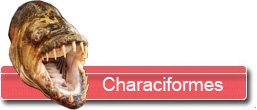
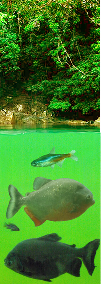
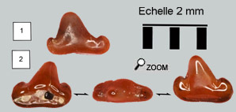
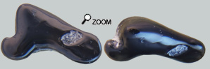

Surprenant!...

 Ces dents ont été rangées pendant très longtemps parmi les requins dans mes boites de collection. Mais l'absence de racine typique et aussi l'impossibilité de rapporter ces dents à un genre précis de sélaciens, m’ont obligé à chercher ailleurs. Pas des mammifères non plus…
 La seule famille animale susceptible d’accueillir ces petites dents bizarres est le groupe des poissons Characiformes qui constitue une famille très foisonnante en Amérique et en Afrique. Actuellement cette famille regroupe des poissons de tailles et de morphologies très diversifiées.
Les Characidés avaient déjà été observés en Europe à l’Eocène et il était communément admis qu’ils avaient complètement disparu au Néogène. Mais une dent de Characidé a été découverte dans le miocène du Portugal. Et puis le site de Sansan a livré une série de dents remarquablement similaires à celles d’Alestes (poisson africain). J. Gaudant convenait alors d’une possible migration de characiformes d’Afrique vers le continent Européen au Miocène. Pour les quelques dents de Characidés montrées ici, il est difficile de préciser la famille de poisson concernée. En effet le groupe est tellement varié qu’on pourrait trouver des ressemblances avec des dents de nombreux genres (Hemibrycon…). Des dents un peu similaires ont été trouvées dans les faluns de Bretagne. Et il y a certainement encore de belles découvertes à réaliser…
Des dents très spécialisées...
De nombreux characidés ressemblent aux cyprinidés au point que jusqu’à récemment les 2 familles avaient été réunies en un seul groupe. La différence la plus nette entre ces 2 familles est la présence de dents pharyngiennes chez les cyprinidés contre des dents sur les mâchoires pour les Characiformes.
Il est difficile de définir une écologie-type chez les Characiformes. Ces sont des poissons dulcicoles plutôt tropicaux. Les espèces font preuve d’une grande créativité dans les dentitions au point qu’elles peuvent parfois se comparer à celles de mammifères, des requins ou encore des sparidés…Sur la dent de dessous, on voit nettement une usure fonctionnelle occlusale.
 Cette spécialisation est le produit d’une évolution trophique. Certains characidés se nourrissent de végétaux, d’autres d’invertébrés, d’autres de fruits ou même encore de viande. Et oui les terribles piranhas sont des characiformes! Et de fait, les dents prennent des formes étonnantes. L'hétérodontie accentue encore la diversité des dents retrouvées. |